KAIVINKONE
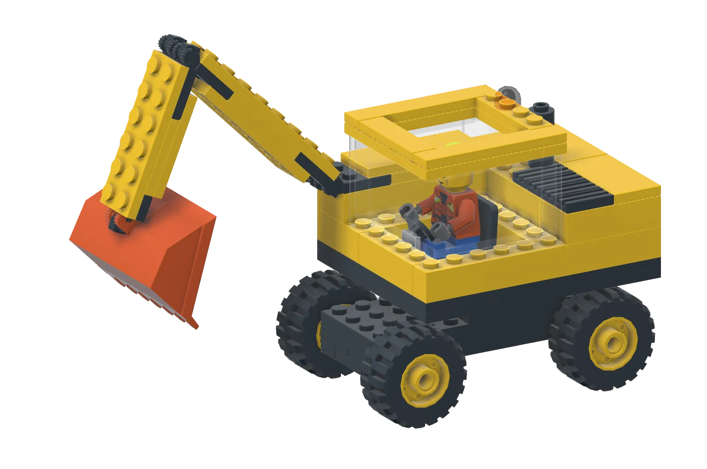
Kirjan sivut The booklet's pages
Napauta sivua, niin näet sen vaiheen 3D:nä. Tap a page to see its step in 3D.
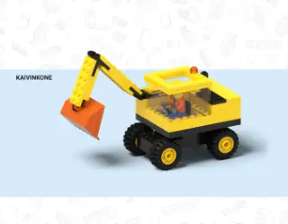
Sivu 1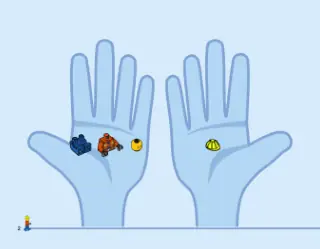
Sivu 23D:nä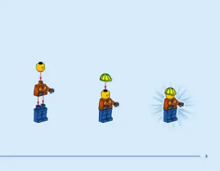
Sivu 33D:nä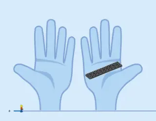
Sivu 43D:nä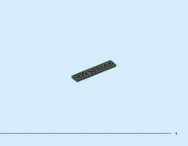
Sivu 53D:nä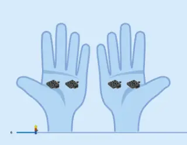
Sivu 63D:nä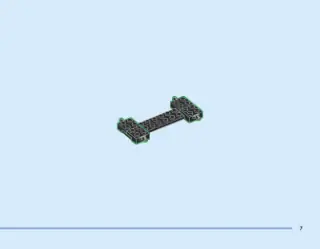
Sivu 73D:nä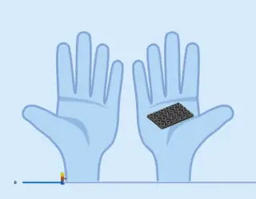
Sivu 83D:nä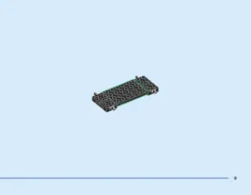
Sivu 93D:nä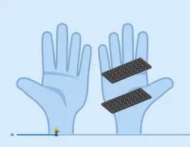
Sivu 103D:nä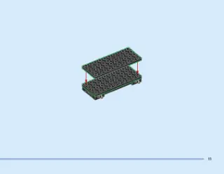
Sivu 113D:nä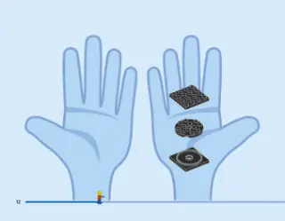
Sivu 123D:nä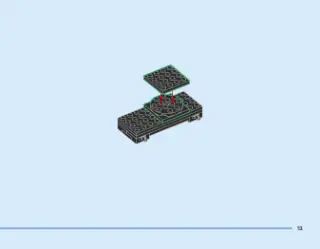
Sivu 133D:nä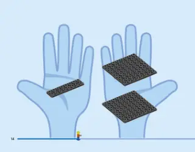
Sivu 143D:nä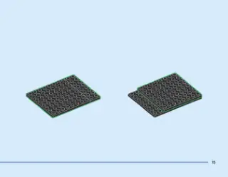
Sivu 153D:nä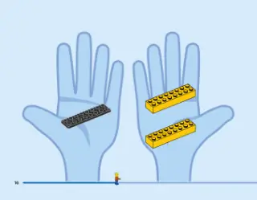
Sivu 163D:nä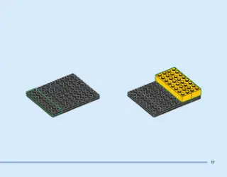
Sivu 173D:nä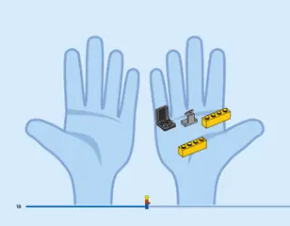
Sivu 183D:nä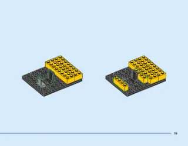
Sivu 193D:nä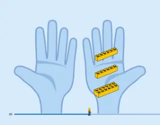
Sivu 203D:nä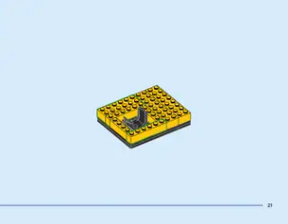
Sivu 213D:nä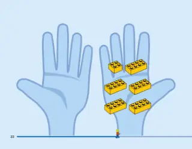
Sivu 223D:nä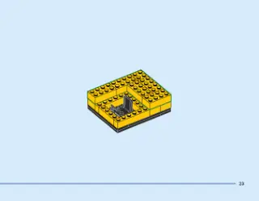
Sivu 233D:nä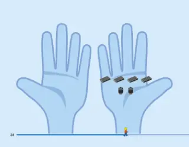
Sivu 243D:nä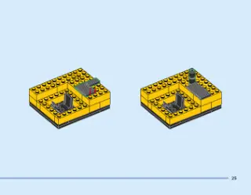
Sivu 253D:nä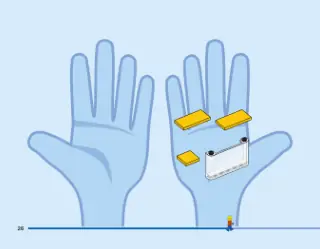
Sivu 263D:nä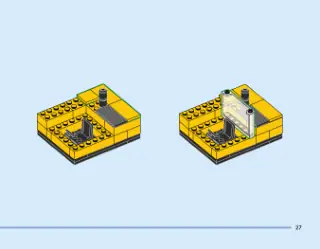
Sivu 273D:nä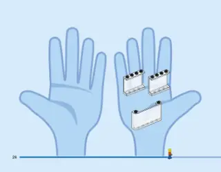
Sivu 283D:nä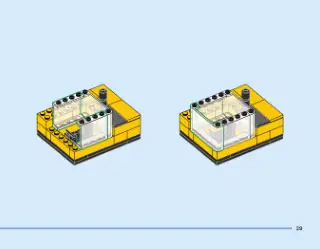
Sivu 293D:nä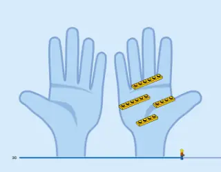
Sivu 303D:nä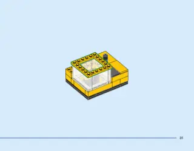
Sivu 313D:nä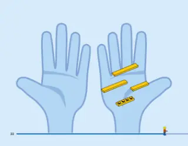
Sivu 323D:nä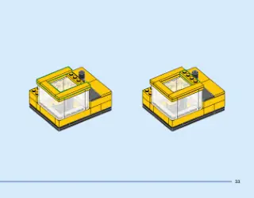
Sivu 333D:nä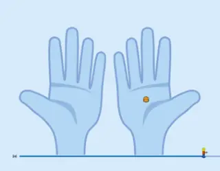
Sivu 343D:nä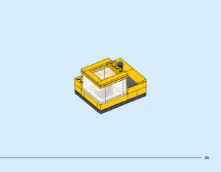
Sivu 353D:nä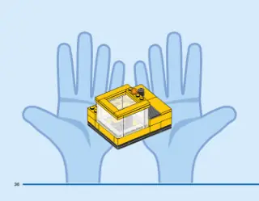
Sivu 363D:nä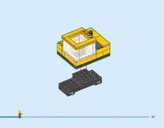
Sivu 373D:nä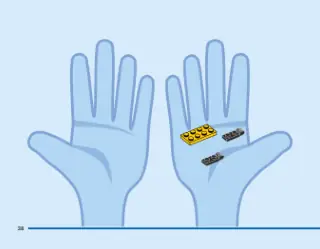
Sivu 383D:nä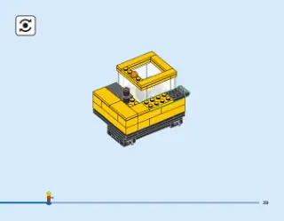
Sivu 393D:nä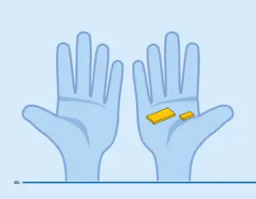
Sivu 403D:nä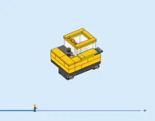
Sivu 413D:nä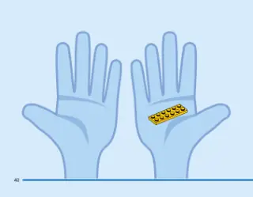
Sivu 423D:nä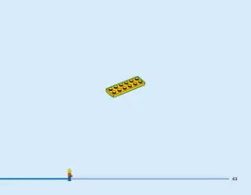
Sivu 433D:nä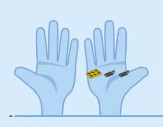
Sivu 443D:nä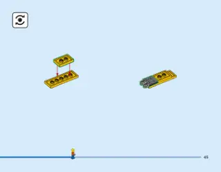
Sivu 453D:nä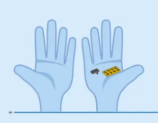
Sivu 463D:nä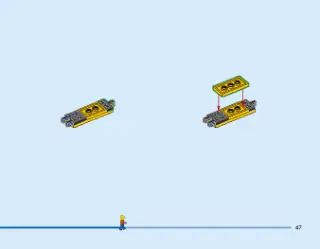
Sivu 473D:nä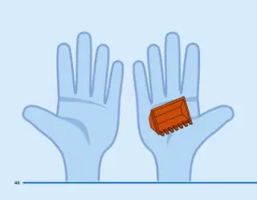
Sivu 483D:nä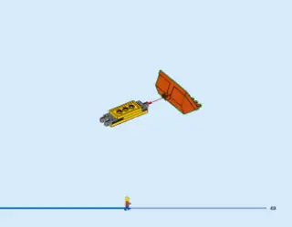
Sivu 493D:nä- Sivu 503D:nä
- Sivu 513D:nä
- Sivu 523D:nä
- Sivu 533D:nä
- Sivu 543D:nä
- Sivu 553D:nä
- Sivu 563D:nä
- Sivu 573D:nä
- Sivu 583D:nä
- Sivu 593D:nä
- Sivu 603D:nä
- Sivu 613D:nä
- Sivu 623D:nä
- Sivu 633D:nä
- Sivu 64
- Sivu 65
- Sivu 66
- Sivu 67
- Sivu 68
FI: Kaivinkone: rakennusohjeet kirjana ja 3D:nä. EN: Building instructions for the excavator, as a booklet and in 3D.